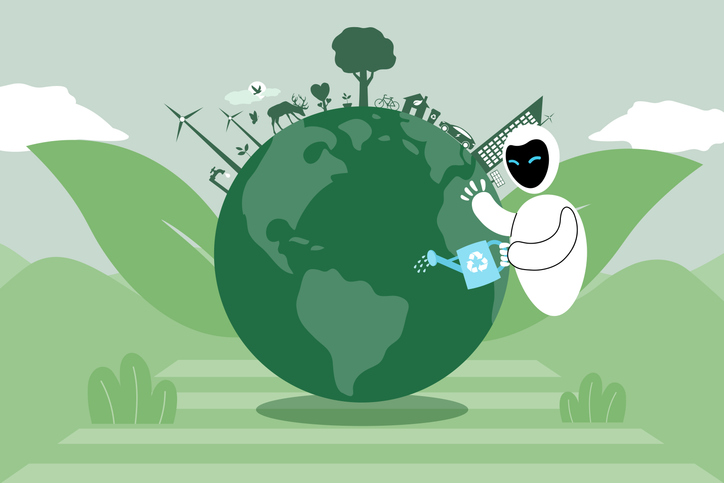
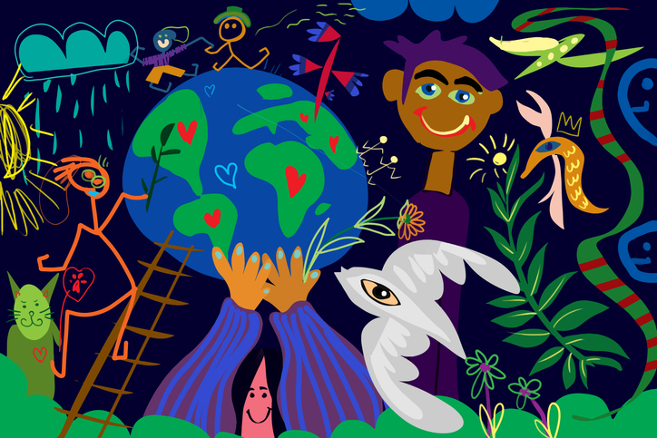

SUSTAIN
Sustain es el primer y único token sustentable con el objetivo de empoderar a las personas generando un bienestar mundial



Sustain es el primer y único token sustentable con el objetivo de empoderar a las personas generando un bienestar mundial